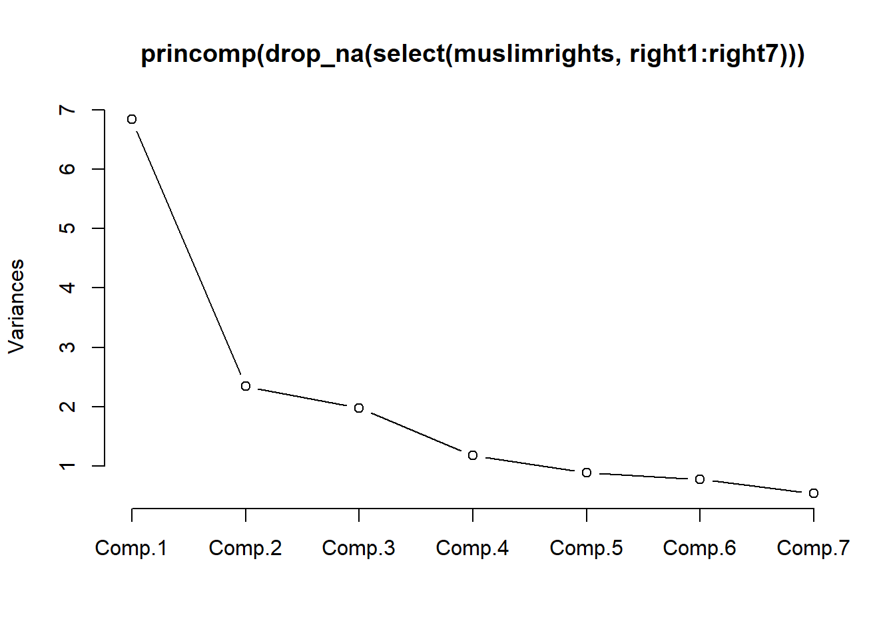
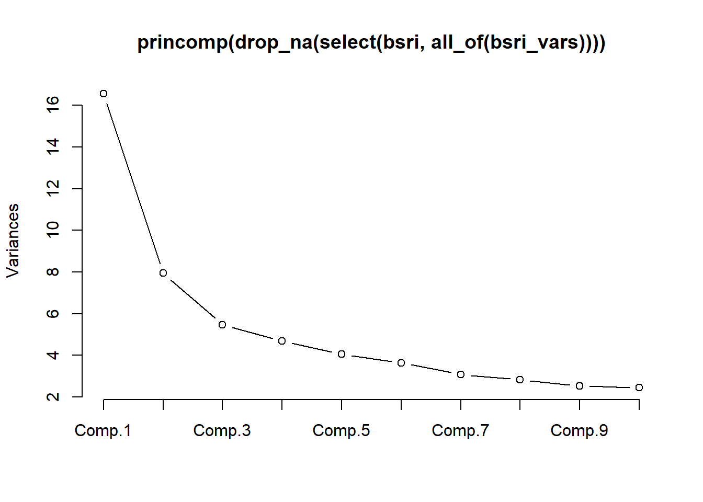

data <- read_dta("sbs399_sexroles.dta")Factor analysis (FA)
Introduction
See slides.
R
You need to learn about the following R functions for factor analysis. Optionally you may want to check principal component analysis.
| R | Description |
|---|---|
| factanal() | factor analysis by maximum likelihood |
| prcomp() | principal component analysis |
| screeplot() | plot of eigenvalues to determine number of factors |
| predict() | factor scores |
factanal() performs factor analysis using maximum likelihood estimation. The other functions can be used to inspect and interpret the factor solution.
Examples:
Setup data on sex role attitudes
Determine the number of factors with a scree plot:
cor_mat <- cor(
data |> select(sexrol1:sexrol5),
use = "pairwise.complete.obs"
)
eigenvalues <- eigen(cor_mat)$values
screeplot(
princomp(
data |> select(sexrol1:sexrol5)
),
type = "lines"
)Factor analysis using maximum likelihood:
fa <- factanal(
data |> select(sexrol1:sexrol5),
factors = 2
)Rotate common factors to ease interpretation:
fa_varimax <- factanal(
data |> select(sexrol1:sexrol5),
factors = 2,
rotation = "varimax"
)
print(
fa_varimax,
digits = 2,
cutoff = .30
)Oblique rotation:
fa_oblique <- factanal(
data |> select(sexrol1:sexrol5),
factors = 2,
rotation = "promax"
)
print(
fa_oblique,
digits = 2,
cutoff = .30
)Factor scores, estimated by regression scoring:
scores <- predict(
fa_varimax,
data |> select(sexrol1:sexrol5)
)Assignments
Solutions are contained in dh_factor_assignments.R.
- Use the dataset
muslimrights. You will see that more than 1 factor is needed to obtain a good approximation of the association structure of the variables. The dataset contains two sets of items.
Opposition towards Muslim expressive rights was measured with seven statements. Four example items were:
- The right to establish Islamic schools should always exist in the Netherlands.
- Some Islamic holidays should become official Dutch holidays.
- Dutch TV should broadcast more programmes by and for Muslims.
- In the Netherlands the wearing of a headscarf should not be forbidden.
National identification was measured by six statements:
- My Dutch identity is an important part of my self (iden1);
- I identify strongly with the Netherlands (iden2);
- I feel a strong attachment to the Netherlands (iden3);
- I am proud of my Dutch background (iden4);
- Being Dutch is a very important part of how I see myself (iden5); and
- I feel a strong sense of belonging to the Netherlands (iden6).
Check the descriptives. Check the frequencies. Are the variables approximately normally distributed? Why is this important?
Change the value labels of the variables. Categories run from 1 (completely disagree) to 7 (completely agree).
Do an EFA/ML of the data. Apply a varimax rotation.
Provide interpretations:
- You find two eigenvalues larger than 1. Check the scree plot. How many dimensions would you choose?
- For the moment we choose two dimensions. In the unrotated solution, how much variance is explained by factor 1 and factor 2? And in the rotated solution? Verify that the sum of the variances of factors 1 and 2 is the same for the unrotated and rotated solutions.
- Which variable is not very well explained by the two factors?
- Interpret the two factors.
- If you would make two sum scores for the items, which variables go into sum score 1 and which in sum score 2?
- Apply a promax rotation.
- Provide interpretations:
- Which parts of the output are the same as with the varimax rotation and which are different?
- Interpret the two factors.
- What is the correlation between the factors?
- Which variables go into each of the factors?
- Oversee all analyses that you carried out. What is your final conclusion with respect to the number of dimensions (factors)? Assume for the moment that you choose two dimensions, what is your final conclusion with respect to the interpretation of the dimensions?
- Optional. Analyze the 6 items about national identification in the dataset. Change the variable labels and value labels before you start.
- Use the dataset
bsri.
BSRI stands for the Bem Sex Role Inventory (Bem, 1974). We have data from a sample of 369 middle-class, English speaking women between the ages of 21 and 60 who were interviewed face-to-face.
The full inventory takes 60 items. Tabachnick and Fidell state that in our data there are 20 items measuring the overall trait femininity, 20 items the overall trait masculinity, and 5 items measuring the overall trait social desirability.
- Do an initial check on the data using frequencies and descriptives.
- Do an initial EFA/ML and study the eigenvalues from the scree plot.
- Do a second EFA/ML with two factors with a promax rotation. Interpret the two factors.
- Do a third EFA/ML with five factors with a promax rotation. Interpret the five factors using only those variables that have loadings larger than .40.
We stop here. We have seen that interpreting the factor structure for such a large list of items is difficult and sometimes somewhat arbitrary. More insight could be found from validating the factors in experimental research and by correlating the factors to other variables. Of course, this is beyond the scope of this course.
Answers
Make sure this file is in the same R Project as the data folder. Use relative file paths, not full paths to your computer.
library(tidyverse)── Attaching core tidyverse packages ──────────────────────── tidyverse 2.0.0 ──
✔ dplyr 1.2.1 ✔ readr 2.2.0
✔ forcats 1.0.1 ✔ stringr 1.6.0
✔ ggplot2 4.0.2 ✔ tibble 3.3.1
✔ lubridate 1.9.5 ✔ tidyr 1.3.2
✔ purrr 1.2.2
── Conflicts ────────────────────────────────────────── tidyverse_conflicts() ──
✖ dplyr::filter() masks stats::filter()
✖ dplyr::lag() masks stats::lag()
ℹ Use the conflicted package (<http://conflicted.r-lib.org/>) to force all conflicts to become errorslibrary(haven)
muslimrights <- read_dta("data/muslimrights.dta")
bsri <- read_dta("data/bsri.dta")
bsri_vars <- c(
"helpful", "reliant", "defbel", "yielding", "cheerful", "indpt", "athlet", "shy",
"assert", "strpers", "forceful", "affect", "flatter", "loyal", "analyt", "feminine",
"sympathy", "moody", "sensitiv", "undstand", "compass", "leaderab", "soothe", "risk",
"decide", "selfsuff", "conscien", "dominant", "masculin", "stand", "happy", "softspok",
"warm", "truthful", "tender", "gullible", "leadact", "childlik", "individ", "foullang",
"lovchil", "compete", "ambitiou", "gentle"
)1. Opposition to Muslim expressive rights (muslimrights)
Descriptives and frequencies:
muslimrights |>
select(right1:right7) |>
summary() right1 right2 right3 right4 right5
Min. :1.000 Min. :1.000 Min. :1.000 Min. :1.00 Min. :1.000
1st Qu.:4.000 1st Qu.:3.000 1st Qu.:3.000 1st Qu.:2.00 1st Qu.:5.000
Median :5.000 Median :5.000 Median :4.000 Median :3.00 Median :6.000
Mean :4.507 Mean :4.333 Mean :3.907 Mean :3.36 Mean :5.427
3rd Qu.:5.000 3rd Qu.:5.000 3rd Qu.:5.000 3rd Qu.:5.00 3rd Qu.:6.000
Max. :7.000 Max. :7.000 Max. :7.000 Max. :7.00 Max. :7.000
right6 right7
Min. :3.00 Min. :1.000
1st Qu.:5.00 1st Qu.:3.000
Median :6.00 Median :4.000
Mean :5.64 Mean :4.067
3rd Qu.:6.00 3rd Qu.:5.000
Max. :7.00 Max. :7.000 muslimrights |>
select(right1:right7) |>
map(table)$right1
1 2 3 4 5 6 7
2 5 8 16 27 16 1
$right2
1 2 3 4 5 6 7
4 7 10 12 27 11 4
$right3
1 2 3 4 5 6 7
5 8 15 19 20 5 3
$right4
1 2 3 4 5 6 7
12 16 14 13 10 6 4
$right5
1 2 3 4 5 6 7
1 2 2 4 28 26 12
$right6
3 4 5 6 7
3 9 18 27 18
$right7
1 2 3 4 5 6 7
6 11 8 18 16 11 5 # these are 7-point Likert items, so they are not truly continuous or
# normally distributed; ML factor analysis assumes multivariate normality,
# so with clearly skewed or heavily piled-up items the ML significance
# tests should be interpreted with some caution.Change the value labels:
muslimrights <- muslimrights |>
mutate(across(
right1:right7,
~ factor(
.x,
levels = 1:7,
labels = c(
"completely disagree", "mostly disagree", "disagree",
"neutral", "agree", "mostly agree", "completely agree"
)
),
.names = "f{.col}"
))
# the ffright* factor versions are for labeled frequency tables; the
# analyses below keep using the original numeric right1:right7 variables.Determine the number of factors with a scree plot, then fit a two-factor solution:
cor_mat_muslim <- cor(
muslimrights |> select(right1:right7),
use = "pairwise.complete.obs"
)
eigen(cor_mat_muslim)$values[1] 3.0448793 1.3494717 0.8283925 0.6046057 0.5029599 0.3471795 0.3225115screeplot(
princomp(muslimrights |> select(right1:right7) |> drop_na()),
type = "lines"
)
# two eigenvalues clearly larger than 1, consistent with choosing a
# two-factor solution.fa_muslim <- factanal(
muslimrights |> select(right1:right7) |> drop_na(),
factors = 2,
rotation = "varimax"
)
fa_muslim
Call:
factanal(x = drop_na(select(muslimrights, right1:right7)), factors = 2, rotation = "varimax")
Uniquenesses:
right1 right2 right3 right4 right5 right6 right7
0.579 0.829 0.325 0.334 0.189 0.609 0.542
Loadings:
Factor1 Factor2
right1 0.605 0.235
right2 0.330 0.249
right3 0.818
right4 0.811
right5 0.899
right6 0.191 0.595
right7 0.494 0.463
Factor1 Factor2
SS loadings 2.084 1.509
Proportion Var 0.298 0.216
Cumulative Var 0.298 0.513
Test of the hypothesis that 2 factors are sufficient.
The chi square statistic is 5.14 on 8 degrees of freedom.
The p-value is 0.743 Compare the unrotated and rotated (varimax) solutions:
fa_muslim_unrotated <- factanal(
muslimrights |> select(right1:right7) |> drop_na(),
factors = 2,
rotation = "none"
)
fa_muslim_unrotated
Call:
factanal(x = drop_na(select(muslimrights, right1:right7)), factors = 2, rotation = "none")
Uniquenesses:
right1 right2 right3 right4 right5 right6 right7
0.579 0.829 0.325 0.334 0.189 0.609 0.542
Loadings:
Factor1 Factor2
right1 0.587 0.277
right2 0.408
right3 0.616 0.544
right4 0.625 0.524
right5 0.683 -0.587
right6 0.563 -0.272
right7 0.676
Factor1 Factor2
SS loadings 2.521 1.072
Proportion Var 0.360 0.153
Cumulative Var 0.360 0.513
Test of the hypothesis that 2 factors are sufficient.
The chi square statistic is 5.14 on 8 degrees of freedom.
The p-value is 0.743 fa_muslim
Call:
factanal(x = drop_na(select(muslimrights, right1:right7)), factors = 2, rotation = "varimax")
Uniquenesses:
right1 right2 right3 right4 right5 right6 right7
0.579 0.829 0.325 0.334 0.189 0.609 0.542
Loadings:
Factor1 Factor2
right1 0.605 0.235
right2 0.330 0.249
right3 0.818
right4 0.811
right5 0.899
right6 0.191 0.595
right7 0.494 0.463
Factor1 Factor2
SS loadings 2.084 1.509
Proportion Var 0.298 0.216
Cumulative Var 0.298 0.513
Test of the hypothesis that 2 factors are sufficient.
The chi square statistic is 5.14 on 8 degrees of freedom.
The p-value is 0.743 # the sum of the SS loadings (variance explained) across both factors is
# the same for the unrotated and the rotated solution; varimax rotation
# only redistributes how much of that total variance is attributed to
# factor 1 versus factor 2, to make the loadings easier to interpret.fa_muslim
Call:
factanal(x = drop_na(select(muslimrights, right1:right7)), factors = 2, rotation = "varimax")
Uniquenesses:
right1 right2 right3 right4 right5 right6 right7
0.579 0.829 0.325 0.334 0.189 0.609 0.542
Loadings:
Factor1 Factor2
right1 0.605 0.235
right2 0.330 0.249
right3 0.818
right4 0.811
right5 0.899
right6 0.191 0.595
right7 0.494 0.463
Factor1 Factor2
SS loadings 2.084 1.509
Proportion Var 0.298 0.216
Cumulative Var 0.298 0.513
Test of the hypothesis that 2 factors are sufficient.
The chi square statistic is 5.14 on 8 degrees of freedom.
The p-value is 0.743 # the uniquenesses reported for each item show which variable is least
# well explained by the two-factor solution (the item with the largest
# uniqueness).Oblique (promax) rotation:
fa_muslim_promax <- factanal(
muslimrights |> select(right1:right7) |> drop_na(),
factors = 2,
rotation = "promax"
)
fa_muslim_promax
Call:
factanal(x = drop_na(select(muslimrights, right1:right7)), factors = 2, rotation = "promax")
Uniquenesses:
right1 right2 right3 right4 right5 right6 right7
0.579 0.829 0.325 0.334 0.189 0.609 0.542
Loadings:
Factor1 Factor2
right1 0.608
right2 0.292 0.176
right3 0.903 -0.181
right4 0.888 -0.156
right5 -0.245 1.006
right6 0.614
right7 0.407 0.367
Factor1 Factor2
SS loadings 2.285 1.617
Proportion Var 0.326 0.231
Cumulative Var 0.326 0.557
Factor Correlations:
Factor1 Factor2
Factor1 1.000 0.529
Factor2 0.529 1.000
Test of the hypothesis that 2 factors are sufficient.
The chi square statistic is 5.14 on 8 degrees of freedom.
The p-value is 0.743 # unlike varimax, promax allows the two factors to correlate with each
# other; that correlation is reported separately below.
fa_muslim_promax$correlation right1 right2 right3 right4 right5 right6 right7
right1 1.0000000 0.2591219 0.5473819 0.4990005 0.2565616 0.2038046 0.3578015
right2 0.2591219 1.0000000 0.3104493 0.2788670 0.2312280 0.2980028 0.2167196
right3 0.5473819 0.3104493 1.0000000 0.6592852 0.1000763 0.2058874 0.4131928
right4 0.4990005 0.2788670 0.6592852 1.0000000 0.1129323 0.2025098 0.4966701
right5 0.2565616 0.2312280 0.1000763 0.1129323 1.0000000 0.5389962 0.4400539
right6 0.2038046 0.2980028 0.2058874 0.2025098 0.5389962 1.0000000 0.3922900
right7 0.3578015 0.2167196 0.4131928 0.4966701 0.4400539 0.3922900 1.0000000# Optional: national identification items (iden1:iden6)
muslimrights <- muslimrights |>
mutate(across(
iden1:iden6,
~ factor(.x, levels = 1:7),
.names = "f{.col}"
))
fa_iden <- factanal(
muslimrights |> select(iden1:iden6) |> drop_na(),
factors = 1
)
fa_iden
Call:
factanal(x = drop_na(select(muslimrights, iden1:iden6)), factors = 1)
Uniquenesses:
iden1 iden2 iden3 iden4 iden5 iden6
0.366 0.105 0.441 0.246 0.342 0.509
Loadings:
Factor1
iden1 0.796
iden2 0.946
iden3 0.747
iden4 0.868
iden5 0.811
iden6 0.701
Factor1
SS loadings 3.991
Proportion Var 0.665
Test of the hypothesis that 1 factor is sufficient.
The chi square statistic is 32.7 on 9 degrees of freedom.
The p-value is 0.000151 2. Bem Sex Role Inventory (bsri)
Initial check of the data:
bsri |>
select(all_of(bsri_vars)) |>
summary() helpful reliant defbel yielding cheerful
Min. :1.000 Min. :1.00 Min. :1.000 Min. :1.000 Min. :1.000
1st Qu.:5.000 1st Qu.:5.00 1st Qu.:5.000 1st Qu.:4.000 1st Qu.:5.000
Median :6.000 Median :6.00 Median :6.000 Median :4.000 Median :6.000
Mean :6.049 Mean :5.93 Mean :5.905 Mean :4.531 Mean :5.813
3rd Qu.:7.000 3rd Qu.:7.00 3rd Qu.:7.000 3rd Qu.:5.000 3rd Qu.:7.000
Max. :7.000 Max. :9.00 Max. :7.000 Max. :9.000 Max. :9.000
indpt athlet shy assert strpers
Min. :1.000 Min. :1.000 Min. :1 Min. :1.00 Min. :1.000
1st Qu.:5.000 1st Qu.:2.000 1st Qu.:2 1st Qu.:4.00 1st Qu.:4.000
Median :6.000 Median :3.000 Median :3 Median :5.00 Median :5.000
Mean :5.854 Mean :3.634 Mean :3 Mean :4.65 Mean :5.076
3rd Qu.:7.000 3rd Qu.:5.000 3rd Qu.:4 3rd Qu.:6.00 3rd Qu.:6.000
Max. :7.000 Max. :7.000 Max. :7 Max. :9.00 Max. :9.000
forceful affect flatter loyal analyt
Min. :1.000 Min. :1.00 Min. :1.000 Min. :1.000 Min. :1.000
1st Qu.:3.000 1st Qu.:5.00 1st Qu.:3.000 1st Qu.:6.000 1st Qu.:4.000
Median :4.000 Median :6.00 Median :5.000 Median :7.000 Median :6.000
Mean :3.951 Mean :5.94 Mean :4.431 Mean :6.593 Mean :5.374
3rd Qu.:5.000 3rd Qu.:7.00 3rd Qu.:6.000 3rd Qu.:7.000 3rd Qu.:7.000
Max. :7.000 Max. :7.00 Max. :9.000 Max. :7.000 Max. :9.000
feminine sympathy moody sensitiv
Min. :1.000 Min. :1.000 Min. :1.000 Min. :1.000
1st Qu.:5.000 1st Qu.:5.000 1st Qu.:2.000 1st Qu.:5.000
Median :6.000 Median :6.000 Median :3.000 Median :6.000
Mean :5.585 Mean :5.976 Mean :3.209 Mean :5.827
3rd Qu.:7.000 3rd Qu.:7.000 3rd Qu.:4.000 3rd Qu.:7.000
Max. :9.000 Max. :7.000 Max. :7.000 Max. :9.000
undstand compass leaderab soothe
Min. :3.000 Min. :1.000 Min. :1.000 Min. :1.000
1st Qu.:5.000 1st Qu.:5.000 1st Qu.:3.000 1st Qu.:5.000
Median :6.000 Median :6.000 Median :5.000 Median :6.000
Mean :5.913 Mean :5.856 Mean :4.599 Mean :5.775
3rd Qu.:7.000 3rd Qu.:7.000 3rd Qu.:6.000 3rd Qu.:7.000
Max. :7.000 Max. :7.000 Max. :7.000 Max. :7.000
risk decide selfsuff conscien
Min. :1.000 Min. :1.000 Min. :1.000 Min. :3.000
1st Qu.:3.000 1st Qu.:4.000 1st Qu.:5.000 1st Qu.:6.000
Median :4.000 Median :5.000 Median :6.000 Median :6.000
Mean :4.171 Mean :4.645 Mean :5.786 Mean :6.214
3rd Qu.:5.000 3rd Qu.:6.000 3rd Qu.:7.000 3rd Qu.:7.000
Max. :7.000 Max. :7.000 Max. :9.000 Max. :7.000
dominant masculin stand happy
Min. :1.000 Min. :1.000 Min. :1.000 Min. :0.000
1st Qu.:3.000 1st Qu.:1.000 1st Qu.:4.000 1st Qu.:5.000
Median :4.000 Median :1.000 Median :6.000 Median :6.000
Mean :4.119 Mean :1.734 Mean :5.298 Mean :5.724
3rd Qu.:5.000 3rd Qu.:2.000 3rd Qu.:6.000 3rd Qu.:7.000
Max. :7.000 Max. :9.000 Max. :7.000 Max. :7.000
softspok warm truthful tender
Min. :1.000 Min. :1.000 Min. :0.000 Min. :2.000
1st Qu.:3.000 1st Qu.:5.000 1st Qu.:6.000 1st Qu.:5.000
Median :5.000 Median :6.000 Median :7.000 Median :6.000
Mean :4.558 Mean :5.653 Mean :6.379 Mean :5.515
3rd Qu.:6.000 3rd Qu.:6.000 3rd Qu.:7.000 3rd Qu.:6.000
Max. :7.000 Max. :7.000 Max. :7.000 Max. :7.000
gullible leadact childlik individ
Min. :0.000 Min. :1.000 Min. :0.000 Min. :1.000
1st Qu.:2.000 1st Qu.:3.000 1st Qu.:1.000 1st Qu.:5.000
Median :4.000 Median :4.000 Median :2.000 Median :5.000
Mean :3.721 Mean :4.236 Mean :2.374 Mean :5.331
3rd Qu.:5.000 3rd Qu.:6.000 3rd Qu.:3.000 3rd Qu.:6.000
Max. :9.000 Max. :7.000 Max. :7.000 Max. :9.000
foullang lovchil compete ambitiou
Min. :1.000 Min. :1.000 Min. :1.000 Min. :1.000
1st Qu.:2.000 1st Qu.:6.000 1st Qu.:3.000 1st Qu.:4.000
Median :4.000 Median :7.000 Median :4.000 Median :5.000
Mean :4.233 Mean :6.154 Mean :4.447 Mean :5.054
3rd Qu.:6.000 3rd Qu.:7.000 3rd Qu.:6.000 3rd Qu.:6.000
Max. :7.000 Max. :7.000 Max. :9.000 Max. :7.000
gentle
Min. :2.000
1st Qu.:5.000
Median :6.000
Mean :5.726
3rd Qu.:7.000
Max. :7.000 Initial factor analysis; use a scree plot to judge how many factors to retain:
cor_mat_bsri <- cor(
bsri |> select(all_of(bsri_vars)),
use = "pairwise.complete.obs"
)
eigen(cor_mat_bsri)$values [1] 7.5322763 5.0201939 2.4040225 2.0703282 1.6983000 1.4122439 1.3437244
[8] 1.1629231 1.1474816 1.1004286 1.0784543 1.0030481 0.9555839 0.9158025
[15] 0.8625846 0.8512396 0.8205770 0.7724068 0.7526868 0.7101285 0.6909753
[22] 0.6490663 0.6237117 0.6099740 0.6061028 0.5620481 0.5496426 0.5233610
[29] 0.5106146 0.4950339 0.4764138 0.4288432 0.4100353 0.3991693 0.3802218
[36] 0.3628917 0.3249289 0.3145884 0.2896048 0.2811943 0.2625237 0.2556944
[43] 0.2307971 0.1481278screeplot(
princomp(bsri |> select(all_of(bsri_vars)) |> drop_na()),
type = "lines"
)
Two-factor solution with a promax rotation:
fa_bsri_2 <- factanal(
bsri |> select(all_of(bsri_vars)) |> drop_na(),
factors = 2,
rotation = "promax"
)
print(fa_bsri_2, digits = 2, cutoff = .30)
Call:
factanal(x = drop_na(select(bsri, all_of(bsri_vars))), factors = 2, rotation = "promax")
Uniquenesses:
helpful reliant defbel yielding cheerful indpt athlet shy
0.76 0.78 0.77 0.87 0.84 0.73 0.92 0.82
assert strpers forceful affect flatter loyal analyt feminine
0.63 0.57 0.56 0.66 0.94 0.80 0.90 0.88
sympathy moody sensitiv undstand compass leaderab soothe risk
0.72 0.97 0.80 0.62 0.59 0.41 0.66 0.78
decide selfsuff conscien dominant masculin stand happy softspok
0.69 0.72 0.80 0.49 0.85 0.60 0.80 0.83
warm truthful tender gullible leadact childlik individ foullang
0.48 0.89 0.49 0.96 0.42 0.98 0.79 0.98
lovchil compete ambitiou gentle
0.89 0.79 0.81 0.51
Loadings:
Factor1 Factor2
helpful 0.36
reliant 0.44
defbel 0.41
yielding 0.36
cheerful 0.37
indpt 0.53
athlet
shy -0.41
assert 0.61
strpers 0.67
forceful 0.69
affect 0.56
flatter
loyal 0.42
analyt
feminine 0.32
sympathy 0.54
moody
sensitiv 0.43
undstand 0.62
compass 0.64
leaderab 0.77
soothe 0.60
risk 0.42
decide 0.53
selfsuff 0.50
conscien
dominant 0.73 -0.32
masculin 0.34 -0.32
stand 0.59
happy 0.44
softspok -0.30 0.37
warm 0.74
truthful 0.32
tender 0.73
gullible
leadact 0.79
childlik
individ 0.44
foullang
lovchil 0.34
compete 0.45
ambitiou 0.40
gentle 0.73
Factor1 Factor2
SS loadings 6.12 5.36
Proportion Var 0.14 0.12
Cumulative Var 0.14 0.26
Factor Correlations:
Factor1 Factor2
Factor1 1.00 0.29
Factor2 0.29 1.00
Test of the hypothesis that 2 factors are sufficient.
The chi square statistic is 2434.88 on 859 degrees of freedom.
The p-value is 1.46e-150 Five-factor solution with a promax rotation, showing only loadings larger than .40:
fa_bsri_5 <- factanal(
bsri |> select(all_of(bsri_vars)) |> drop_na(),
factors = 5,
rotation = "promax"
)
print(fa_bsri_5, digits = 2, cutoff = .40)
Call:
factanal(x = drop_na(select(bsri, all_of(bsri_vars))), factors = 5, rotation = "promax")
Uniquenesses:
helpful reliant defbel yielding cheerful indpt athlet shy
0.74 0.63 0.73 0.85 0.69 0.60 0.86 0.80
assert strpers forceful affect flatter loyal analyt feminine
0.55 0.44 0.47 0.47 0.79 0.75 0.88 0.86
sympathy moody sensitiv undstand compass leaderab soothe risk
0.54 0.76 0.60 0.44 0.37 0.40 0.60 0.70
decide selfsuff conscien dominant masculin stand happy softspok
0.61 0.43 0.66 0.47 0.81 0.60 0.57 0.70
warm truthful tender gullible leadact childlik individ foullang
0.43 0.84 0.44 0.77 0.42 0.83 0.77 0.96
lovchil compete ambitiou gentle
0.87 0.55 0.60 0.46
Loadings:
Factor1 Factor2 Factor3 Factor4 Factor5
helpful
reliant 0.53
defbel 0.41
yielding
cheerful 0.54
indpt 0.53
athlet
shy
assert 0.65
strpers 0.74
forceful 0.73
affect 0.68
flatter 0.44
loyal 0.44
analyt
feminine
sympathy 0.69
moody -0.41
sensitiv 0.66
undstand 0.69
compass 0.75
leaderab 0.52
soothe 0.51
risk
decide 0.42
selfsuff 0.71
conscien 0.46
dominant 0.66
masculin
stand 0.50
happy 0.66
softspok -0.49
warm 0.65
truthful
tender 0.63
gullible -0.42
leadact 0.56
childlik -0.44
individ
foullang
lovchil
compete 0.56
ambitiou 0.55
gentle 0.56
Factor1 Factor2 Factor3 Factor4 Factor5
SS loadings 4.33 3.50 2.78 2.69 1.47
Proportion Var 0.10 0.08 0.06 0.06 0.03
Cumulative Var 0.10 0.18 0.24 0.30 0.34
Factor Correlations:
Factor1 Factor2 Factor3 Factor4 Factor5
Factor1 1.000 0.072 0.056 0.29 0.19
Factor2 0.072 1.000 0.474 0.30 0.19
Factor3 0.056 0.474 1.000 0.21 0.23
Factor4 0.285 0.303 0.212 1.00 0.22
Factor5 0.191 0.188 0.230 0.22 1.00
Test of the hypothesis that 5 factors are sufficient.
The chi square statistic is 1448.64 on 736 degrees of freedom.
The p-value is 6.38e-49 # interpret each factor from the items that load above .40 on it; with 42
# items spread over 5 factors, some items may fail to load cleanly on any
# single factor.